Fundamentos y usos prácticos de Docker
Clase 2 : Conceptos básicos de Docker
Temas de clase 1
Conceptos básicos de Docker
Concepto de imágen Docker
¿Qué es una imágen Docker?
Una imágen de Docker es una plantilla inmutable que contiene todo lo necesario para ejecutar un contenedor, incluyendo el código de la aplicación, las bibliotecas y dependencias, y el entorno de ejecución.
Podemos obtener imágenes de distintos repositorios públicos o privados. El más comúnmente usado es la registry oficial de Docker, DockerHub.
¿Qué es una registry?
Un Docker Registry es un servicio para almacenar y distribuir imágenes de Docker. Docker Hub es el registro público más conocido, aunque no es el único disponible.
Los registros de Docker ofrecen un amplio catálogo de imágenes para descargar y la posibilidad de subir nuestras propias imágenes para compartirlas o usarlas posteriormente. Si deseamos mantener nuestras imágenes de manera privada, algunos registros pueden requerir suscripciones de pago.
También es posible configurar registros privados, lo que nos permite tener nuestro propio registro interno y gestionar las imágenes de Docker de manera segura dentro de nuestra organización.
Registry: Dockerhub
Una búsqueda "Linux" trae muchos resultados. Estando Alpine, Ubuntu, Debian y RockyLinux entre los mas populares.Contenedor
En la clase anterior ejecutamos el contenedor hello-world. ¿Qué ha pasado cuando lo ejecutamos?:- 1. El cliente Docker se conecta con el Docker daemon
- 2. El Docker daemon descarga la imágen (si no se encuentra descargada) "hello-world" desde la registry (DockerHub)
- 3. El Docker daemon crea un nuevo contenedor partiendo desde la imágen descargada y la ejecución de la imágen produce un texto que se muestra en pantalla.
- 4. El contenedor termina su ejecución y finaliza con un estado Exit (0)
Introducción a contenedores
Contenedor
En informática, un contenedor o container, es una unidad ligera y portátil de software que empaqueta una aplicación y todas sus dependencias, permitiendo que se ejecute de manera consistente en cualquier entorno.

Entonces... ¿Para qué vamos a usar contenedores?. Básicamente, para portar nuestra aplicación y ejecutarla de la misma manera en nuestra PC que en cualquier ambiente de desarrollo.
Un poco de historia
Años 1960-1970, se introduce la virtualización en los mainframes de IBM que permite ejecutar múltiples sistemas operativos en una sola máquina física.
En 1992, el programador finlandés Linus Torvals publica bajo licencia GNU GPL2 la versión 0.12 del kernel de Linux. De ahí en más, Linux es software libre.
En 2008 surge LinuX Containers, también conocido por su acrónimo LXC. Aprovechando las características como cgroups y namespaces disponibles a partir de la versión 2.6.29 del kernel de Linux, permite desarrollar una tecnología de virtualización a nivel de sistema operativo. LXC permite que una máquina que corre Linux ejecute múltiples instancias de espacios de usuario aislados dando origen al término container.
En 2013 se libera Docker como código abierto inicialmente basado en LXC. Pero al año siguiente, con el lanzamiento de la versión de Docker 0.9 dejó de utilizar LXC para usar su propio engine llamado libcontainer, escrito en Go.
Desde entonces Docker ha crecido en popularidad colocándose como los proyectos con mas estrellas de GitHub, mas forks y con miles de colaboradores.
Máquinas virtuales
Muchas veces cuando introducimos al concepto de contenedor, viene la confusión si se trata de un tipo de máquina virtual. Repasemos conceptos de máquina virtual:
Una máquina virtual (VM) es un entorno aislado que emula un sistema informático completo (hw), permitiendo ejecutar un sistema operativo y aplicaciones como si fueran una computadora física, utilizando recursos compartidos del hardware del host.
Cada máquina virtual necesitará de asignación de recursos: procesador, disco, memoria, red, etc y un sistema operativo. Para llevar a cabo estas tareas se requiere de un hypervisor.
- Hypervisores mas conocidos
- VMware vShere/ESXi
- Hyper-V
- VirtualBox
- Proxmox VE (KVM)
Arquitectura Máquinas virtuales
Cada máquina virtual requiere un sistema operativo completo (kernel, utilidades del sistema, interfaz de usuario, etc) para funcionar. 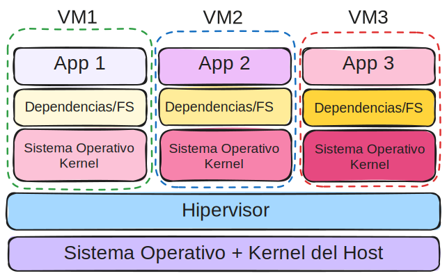 Esto implica que, para correr solo una aplicación o parte de una aplicación mas grande, se debe instalar y mantener un SO completo por cada VM. A menudo, el SO consume más recursos que la propia aplicación.
Arquitectura Contenedores
Cada container, utiliza el kernel del sistema operativo del host. Solo contienen las aplicaciones y sus dependencias necesarias para funcionar.

Los contenedores utilizan aislación a nivel de proceso proporcionado por el kernel del host. Incluso entre dos o más containers pueden compartir sus dependencias y file system. También es posible limitar el uso de CPU y memoria a cada contenedor, tal cual como se haría en una VM. A la arquitectura de contenedores se le suele decir como un tipo de virtualización liviana.
Containers vs. VM
| Caracteristica | VM | Container |
|---|---|---|
| Aislamiento | Completo (a nivel hw) | Liviano (proceso) |
| Recursos | Mas uso de recursos | Menos uso de recursos |
| Arranque | Lento | Rapido |
| SO | Multiples SO | Mismo kernel host |
| Portabilidad | Limitada, depende del hipervisor | Alta, ejecutable en cualquier entorno |
| Seguridad | Fuerte aislamiento de seguridad | Aislamiento a nivel de proceso |
Esto no significa que las máquinas virtuales sean obsoletas en comparación con los contenedores. En algunas situaciones, el uso de contenedores no será posible. Por ejemplo, cuando se necesitan diferentes sistemas operativos para cada aplicación.
Casos de usos de contenedores
- Desarrollo de microservicios: Adecuados para arquitecturas de microservicios donde cada componente de la aplicación se despliega de manera independiente.
- Integración Continua y Despliegue Continuo:Facilitan la creación de pipelines de CI/CD, permitiendo despliegues rápidos y frecuentes.
- Containerización de aplicaciones legacy: Se puede modernizar la infraestructura de aplicaciones no pensadas para contenedores. La conteinerización ayuda a la portabilidad y automatización de despliegues.
- Despliegue sencillo de aplicaciones: Con solo copiar y pegar una instrucción o un archivo de texto es posible tener aplicaciones complejas deployadas para ambientes de prueba rápidamente.
Existen varias tecnologías que utilizan contenedores, entre ellas: LXC, LXD, Docker, Podman, containerd. Además, hay herramientas de orquestación y gestión de contenedores como Kubernetes, OKD.
Consultas
Introducción a Docker
¿Qué es Docker?
Docker es una plataforma de código abierto que facilita la creación, despliegue y ejecución de aplicaciones dentro de contenedores. Docker permite a los desarrolladores empaquetar una aplicación con todas sus dependencias en un contenedor, asegurando que la aplicación se ejecute de manera consistente en cualquier entorno.

Docker, es hoy en día la tecnología de contenedores mas utilizada y más popular.
¿Por qué Docker?
- Comunidad: Existe una gran comunidad aportando tanto al desarrollo de Docker como imágenes Docker. Foros, tutoriales, cursos online.
- Facilidad de uso: Ofrece una interfaz de usuario sencilla y comandos intuitivos. Diversas herramientas gráficas.
- Soporte empresarial: Muchas empresas ofrecen soporte y soluciones basadas en Docker para entorno empresariales.
- Licencia: No requiere de licencia para usar.
- Compatibilidad: Docker es compatible con diversas plataformas y sistemas operativos, lo que facilita su instalación e implementación.
Componentes de Docker
- Docker engine: El motor de Docker es la parte central de Docker, que permite a los usuarios crear, ejecutar y gestionar contenedores.
- Images: Una imagen Docker es una plantilla de solo lectura que define qué software y configuraciones incluye el contenedor. Las imágenes son inmutables y se pueden versionar.
- Containers: Un contenedor Docker es una instancia en ejecución de una imagen. Los contenedores son entornos aislados donde se ejecutan aplicaciones. Un contenedor está asociado a un estado. Los estados de un contenedor pueden ser:
created,running,restarting,removing,paused,exited,dead. - Registry: También conocida como DockerHub es un registro o repositorio de imágenes de contenedores públicas y privadas. Los desarrolladores pueden usar Docker Hub para buscar y descargar imágenes, así como para compartir las suyas propias.
Estados de un contenedor Docker
- Created: El contenedor se creó sin errores pero no está en ejecución. Se usa cuando creamos el contenedor pero aún no utilizarlo.
- Running: El contenedor está creado y corriendo. Puede ser también indicado como
Upy el tiempo que hace que está corriendo. - Restarting: El contenedor se está reiniciando. Esto puede suceder si el contenedor está configurado para reiniciarse automáticamente en ciertos casos, como después de un fallo o bien por indicación del programador.
- Removing: El contenedor está en proceso de ser eliminado.
- Paused: El contenedor se encuentra pausado. Se puede acceder al contenedor pero no está corriendo.
- Exited: El contenedor ha terminado su ejecución y ha salido con un código de salida específico. Esto puede ser el resultado de que el proceso principal dentro del contenedor ha terminado, ya sea exitosamente o con un error.
- Dead: El contenedor se encuentra en un estado donde el demonio Docker no puede gestionarlo adecuadamente. Este es un estado anómalo y generalmente indica que algo ha fallado seriamente.
Ver estado de contenedores
Se usa el comando docker ps -a
docker ps -a
Resultado:
CONTAINER ID IMAGE CREATED STATUS
1a2b3c4d5e6f nginx 2 minutes ago Up 2 minutes
7g8h9i0j1k2l busybox 5 minutes ago Exited (0) 3 min ago
3m4n5o6p7q8r ubuntu 10 minutes ago Created
Mas adelante en el curso profundizaremos en las diferentes interacciones con contenedores.
Consultas
Instalando Docker
Instalando Docker
Docker está disponible para las plataformas mas populares; Windows, GNU/Linux y MacOS.
- Docker Desktop: La aplicación oficial de Docker. Es una interface de usuario gráfica. A su vez contiene el Docker engine.
- Docker Desktop para Windows (Minimo Win 10 Home o Pro 21H2 / WSL version 1.1.3.0)
- Docker Desktop para GNU/Linux
- Docker Desktop para MacOS
- Docker engine: También llamado Docker-CE. Es el motor de docker. Lo básico para que Docker funcione.
En el curso veremos el uso de Docker CLI, ya que no siempre podemos contar con una interface gráfica, ejemplo cuando se corre en servidores.
Instalando DOcker Desktop en Windows
Una vez descargado el instalador, al instalar se verán las siguientes pantallas:
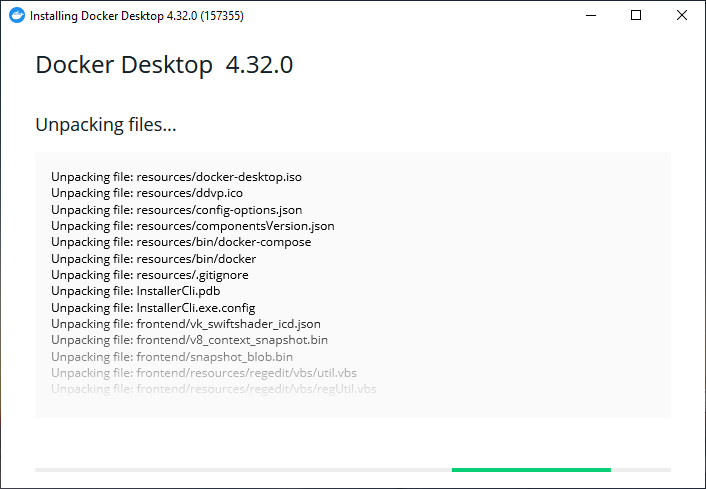Instalando DOcker Desktop en Windows
Debemos aceptar los términos.
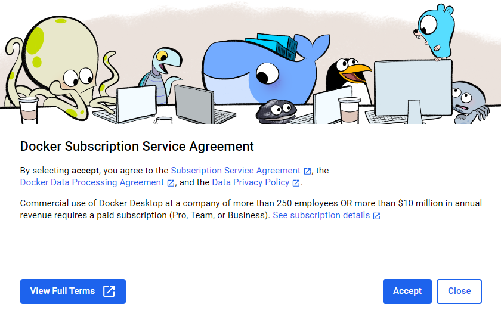Instalando DOcker Desktop en Windows
Elegimos una opción.

Instalando DOcker Desktop en Windows
Podemos continuar sin iniciar sesión ni registrarnos. Pero luego nos pedirá la sesión para descargar las imágenes.
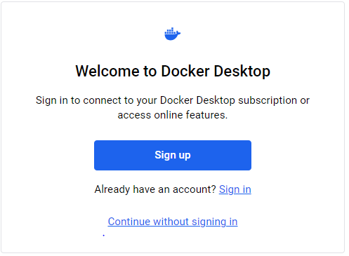Instalando DOcker Desktop en Windows
Instalando DOcker Desktop en Windows
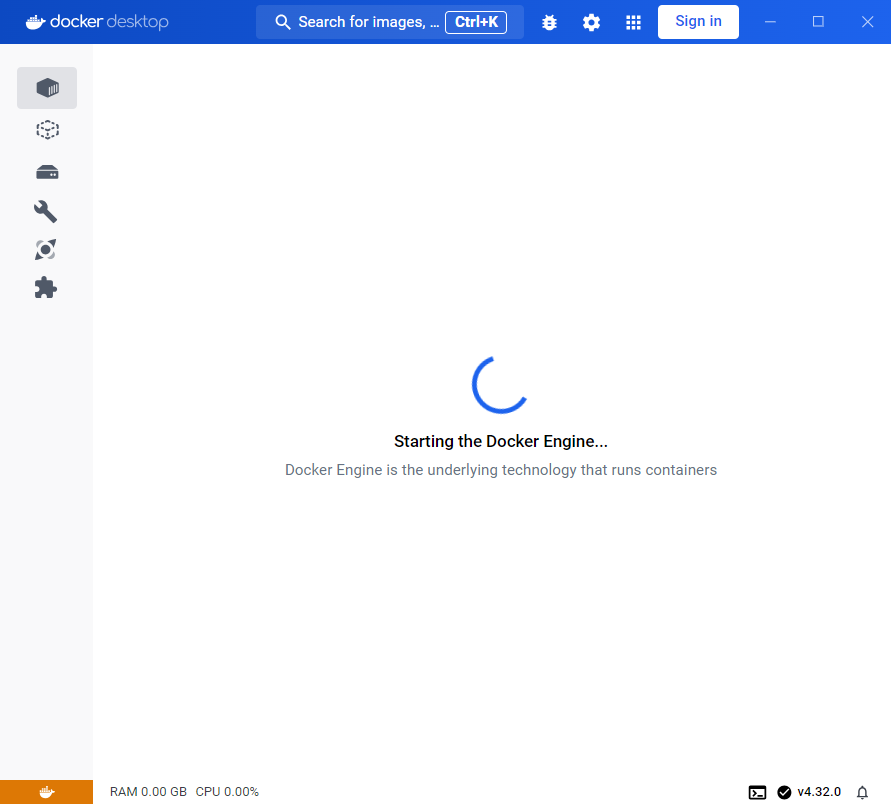Instalando DOcker Desktop en Windows
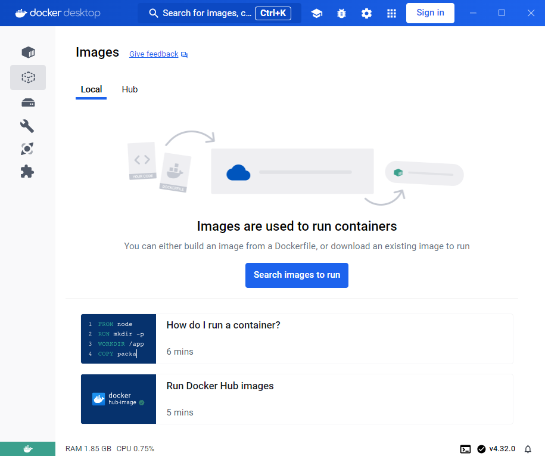Instalando DOcker Desktop en Windows
Una vez instalado y corriendo. Es posible ejecutar comandos docker desde una consola de PowerShell (PS).
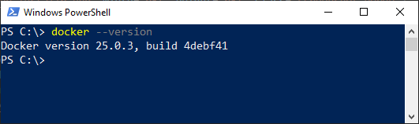 Para consultar la versión instalada ejecutamos:
docker --version
Ejecutando nuestro primer contenedor
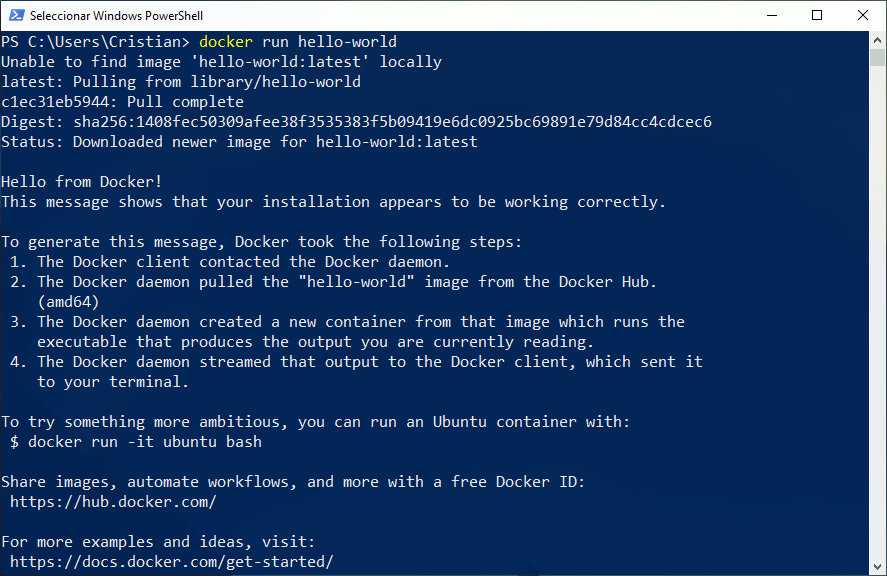
docker run hello-world
Ejecutando nuestro primer contenedor
Vista desde Docker Desktop. Containers:
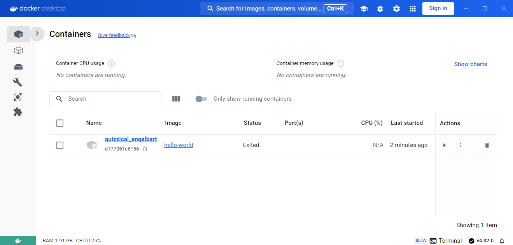Ejecutando nuestro primer contenedor
Vista desde Docker Desktop. Images:
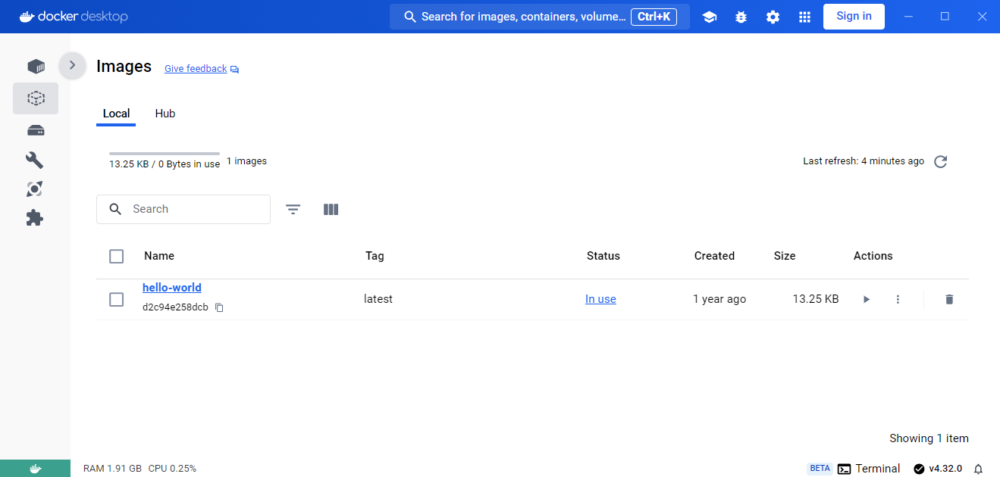Ejecutamos un contenedor Ubuntu
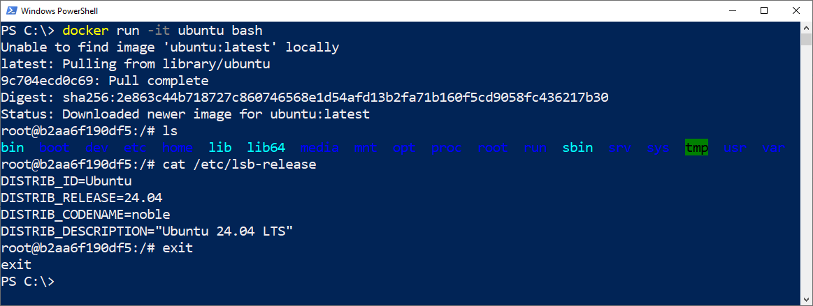
docker run -it ubuntu bash
Ejecutamos un contenedor Ubuntu
¿Qué pasa si volvemos a ejecutar un contenedor Ubuntu? 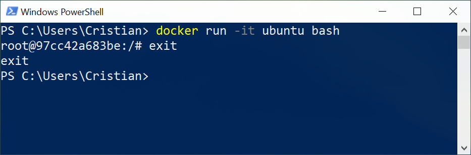- No fue necesario volver a descargar la imágen.
- El contenedor NO es el mismo que se ejecutó la vez anterior.
Consultas
Ejercicio en clase:
- Instalar Docker en su PC
- Ejecutar la imágen hello-world*
- Ejecutar en una sesión interactiva la imágen ubuntu
- Ejecutar el siguiente comando para ver la memoria RAM libre.
free -h - ¿Qué dato relevante ha mostrado?
* Importante: Asegúrese que Docker Desktop esté iniciado.